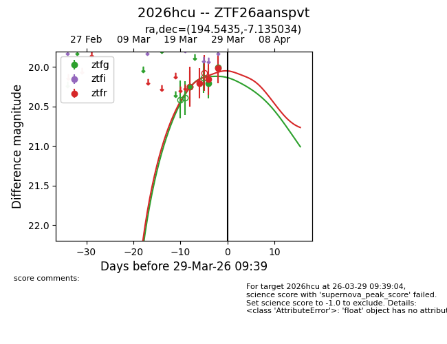
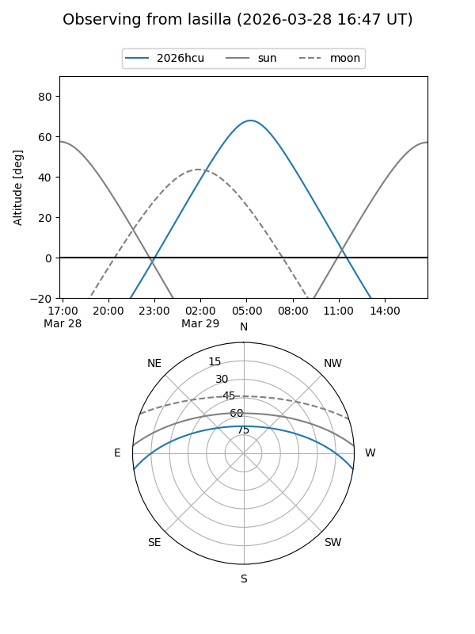
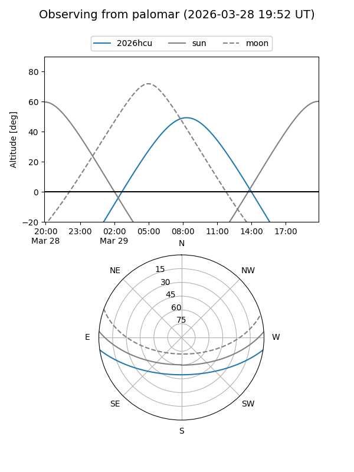
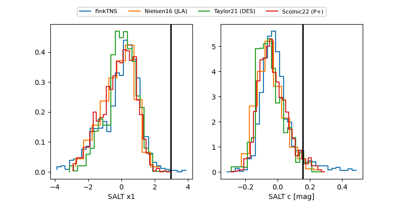

2026hcu
Target 2026hcu at 2026-03-29 09:41
Aliases and brokers:
FINK: link
Lasair: link
ALeRCE: link
TNS: link
YSE: link
alt names
ZTF26aanspvt (ztf,fink_ztf)
2026hcu (tns,yse)
Coordinates:
equatorial (ra, dec) = 194.5435,-7.13503
equatorial (HMS+DMS) = 12:58:10.44,-07:08:06.12
galactic (l, b) = (305.8979,+55.69792)
Flags:
Photometry:
last ztfg=20.01, ztfr=20.02
3 ztfg, 3 ztfr detections
Lightcurve

Visibility


Additional plots
